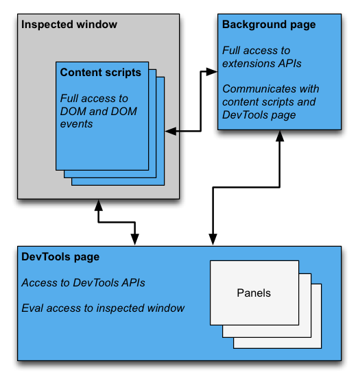

Except as otherwise noted, the content of this page is licensed under the Creative Commons Attribution 3.0 License, and code samples are licensed under the BSD License.
©2013 Google
A DevTools extension adds functionality to the Chrome DevTools. It can add new UI panels and sidebars, interact with the inspected page, get information about network requests, and more. DevTools extensions have access to an additional set of DevTools-specific extension APIs:
A DevTools extension is structured like any other extension: it can have a background page, content scripts, and other items. In addition, each DevTools extension has a DevTools page, which has access to the DevTools APIs.

An instance of the extension's DevTools page is created each time a DevTools window opens. The DevTools page exists for the lifetime of the DevTools window. The DevTools page has access to the DevTools APIs and a limited set of extension APIs. Specifically, the DevTools page can:
devtools.panels
APIs.devtools.inspectedWindow APIs.devtools.network
APIs.The DevTools page cannot use most of the extensions APIs directly. It has
access to the same subset of the extension
and runtime
APIs that a content script has access to. Like a content script, a DevTools page
can communicate with the background page using Message Passing.
For an example, see Injecting a Content Script.
To create a DevTools page for your extension, add the devtools_page
field in the extension manifest:
{
"name": ...
"version": "1.0",
"minimum_chrome_version": "10.0",
"devtools_page": "devtools.html",
...
}
An instance of the devtools_page specified in your extension's
manifest is created for every DevTools window opened. The page may add other
extension pages as panels and sidebars to the DevTools window using the
devtools.panels API.
The devtools_page field must point to an HTML page.
This differs from the background field, used for specifying a background page,
which lets you specify JavaScript files directly.
The chrome.devtools.* API modules are available only to the pages
loaded within the DevTools window. Content scripts and other extension pages do not
have these APIs. Thus, the APIs are available only through the lifetime of the
DevTools window.
There are also some DevTools APIs that are still experimental. Refer to chrome.experimental.* APIs for the list of experimental APIs and guidelines on how to use them.
In addition to the usual extension UI elements, such as browser actions, context menus and popups, a DevTools extension can add UI elements to the DevTools window:
Each panel is its own HTML file, which can include other resources (JavaScript, CSS, images, and so on). Creating a basic panel looks like this:
chrome.devtools.panels.create("My Panel",
"MyPanelIcon.png",
"Panel.html",
function(panel) {
// code invoked on panel creation
}
);
JavaScript executed in a panel or sidebar pane has access to the the same APIs as the DevTools page.
Creating a basic sidebar pane for the Elements panel looks like this:
chrome.devtools.panels.elements.createSidebarPane("My Sidebar",
function(sidebar) {
// sidebar initialization code here
sidebar.setObject({ some_data: "Some data to show" });
});
There are several ways to display content in a sidebar pane:
HTML content. Call
setPage to specify
an HTML page to display in the pane.
JSON data. Pass a JSON object to
setObject.
JavaScript expression. Pass an expression to
setExpression.
DevTools evaluates the expression in the context of the inspected page, and
displays the return value.
For both setObject and setExpression,
the pane displays the value as it would appear in the DevTools console.
However, setExpression lets you display DOM elements and arbitrary
JavaScript objects, while setObject only supports JSON objects.
The following sections describe some typical scenarios for communicating between the different components of a DevTools extension.
The DevTools page can't call tabs.executeScript directly.
To inject a content script from the DevTools page, you must retrieve the ID
of the inspected window's tab using the inspectedWindow.tabId
property and send a message to the background page. From the background page,
call tabs.executeScript to inject the script.
If a content script has already been injected, you can add
additional context scripts using the eval method. See
Passing the Selected Element to a Content Script
for more information.
The following code snippets show how to inject a content script using
executeScript.
// DevTools page -- devtools.js
// Create a connection to the background page
var backgroundPageConnection = chrome.runtime.connect({
name: "devtools-page"
});
backgroundPageConnection.onMessage.addListener(function (message) {
// Handle responses from the background page, if any
});
// Relay the tab ID to the background page
chrome.runtime.sendMessage({
tabId: chrome.devtools.inspectedWindow.tabId,
scriptToInject: "content_script.js"
});
Code for the background page:
// Background page -- background.js
chrome.runtime.onConnect.addListener(function(devToolsConnection) {
// assign the listener function to a variable so we can remove it later
var devToolsListener = function(message, sender, sendResponse) {
// Inject a content script into the identified tab
chrome.tabs.executeScript(message.tabId,
{ file: message.scriptToInject });
}
// add the listener
devToolsConnection.onMessage.addListener(devToolsListener);
devToolsConnection.onDisconnect(function() {
devToolsConnection.onMessage.removeListener(devToolsListener);
});
}
You can use the inspectedWindow.eval method to execute
JavaScript code in the context of the inspected page. You can invoke the
eval method from a DevTools page, panel or sidebar pane.
By default, the expression is evaluated in the context of the main frame of the
page. Use the useContentScriptContext: true option to evaluate the
expression in the same context as the content scripts.
Calling eval with useContentScriptContext: true does
not create a content script context, so you must load a context script
before calling eval, either by calling executeScript or
by specifying a content script in the manifest.json file.
Once the context script context exists, you can use this option to inject additional content scripts.
The eval method is powerful when used in the right
context and dangerous when used inappropriately. Use the
tabs.executeScript method if you don't need access to the
JavaScript context of the inspected page. For detailed cautions and a comparison
of the two methods, see devtools.inspectedWindow.
The content script doesn't have direct access to the current selected element.
However, any code you execute using inspectedWindow.eval has
access to the DevTools console and command-line APIs. For example, in evaluated code
you can use $0 to access the selected element.
To pass the selected element to a content script:
inspectedWindow.eval
with the useContentScriptContext: true option. The code in your content script might look something like this:
function setSelectedElement(el) {
// do something with the selected element
}
Invoke the method from the DevTools page like this:
chrome.devtools.inspectedWindow.eval("setSelectedElement($0)",
{ useContentScriptContext: true });
The useContentScriptContext: true option specifies that the
expression must be evaluated in the same context as the content scripts, so it can
access the setSelectedElement method.
Messaging between the DevTools page and content scripts is indirect, by way of the background page.
When sending a message to a content script, the background page can use
the tabs.sendMessage method, which directs a message to the
content scripts in a specific tab, as shown in
Injecting a Content Script.
When sending a message from a content script, there is no ready-made method to deliver a message to the correct DevTools page instance associated with the current tab. As a workaround, you can have the DevTools page establish a long-lived connection with the background page, and have the background page keep a map of tab IDs to connections, so it can route each message to the correct connection.
// background.js
var connections = {};
chrome.runtime.onConnect.addListener(function (port) {
var extensionListener = function (message, sender, sendResponse) {
// The original connection event doesn't include the tab ID of the
// DevTools page, so we need to send it explicitly.
if (message.name == "init") {
connections[message.tabId] = port;
return;
}
// other message handling
}
// Listen to messages sent from the DevTools page
port.onMessage.addListener(extensionListener);
port.onDisconnect.addListener(function(port) {
port.onMessage.removeListener(extensionListener);
var tabs = Object.keys(connections);
for (var i=0, len=tabs.length; i < len; i++) {
if (connections[tabs[i]] == port) {
delete connections[tabs[i]]
break;
}
}
});
});
// Receive message from content script and relay to the devTools page for the
// current tab
chrome.runtime.onMessage.addListener(function(request, sender, sendResponse) {
// Messages from content scripts should have sender.tab set
if (sender.tab) {
var tabId = sender.tab.id;
if (tabId in connections) {
connections[tabId].postMessage(request);
} else {
console.log("Tab not found in connection list.");
}
} else {
console.log("sender.tab not defined.");
}
return true;
});
The DevTools page (or panel or sidebar pane) establishes the connection like this:
// Create a connection to the background page
var backgroundPageConnection = chrome.runtime.connect({
name: "panel"
});
backgroundPageConnection.postMessage({
name: 'init',
tabId: chrome.devtools.inspectedWindow.tabId
});
If your extension needs to track whether the DevTools window is open, you can add an onConnect listener to the background page, and call connect from the DevTools page. Since each tab can have its own DevTools window open, you may receive multiple connect events. To track whether any DevTools window is open, you need to count the connect and disconnect events as shown below:
// background.js
var openCount = 0;
chrome.runtime.onConnect.addListener(function (port) {
if (port.name == "devtools-page") {
if (openCount == 0) {
alert("DevTools window opening.");
}
openCount++;
port.onDisconnect.addListener(function(port) {
openCount--;
if (openCount == 0) {
alert("Last DevTools window closing.");
}
});
}
});
The DevTools page creates a connection like this:
// devtools.js
// Create a connection to the background page
var backgroundPageConnection = chrome.runtime.connect({
name: "devtools-page"
});
For information on the standard APIs that extensions can use, see chrome.* APIs and Other APIs.
Give us feedback! Your comments and suggestions help us improve the APIs.
You can find examples that use DevTools APIs in Samples.